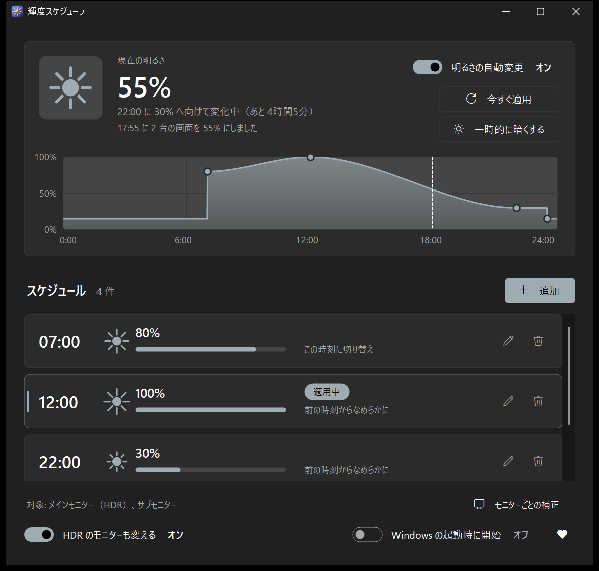
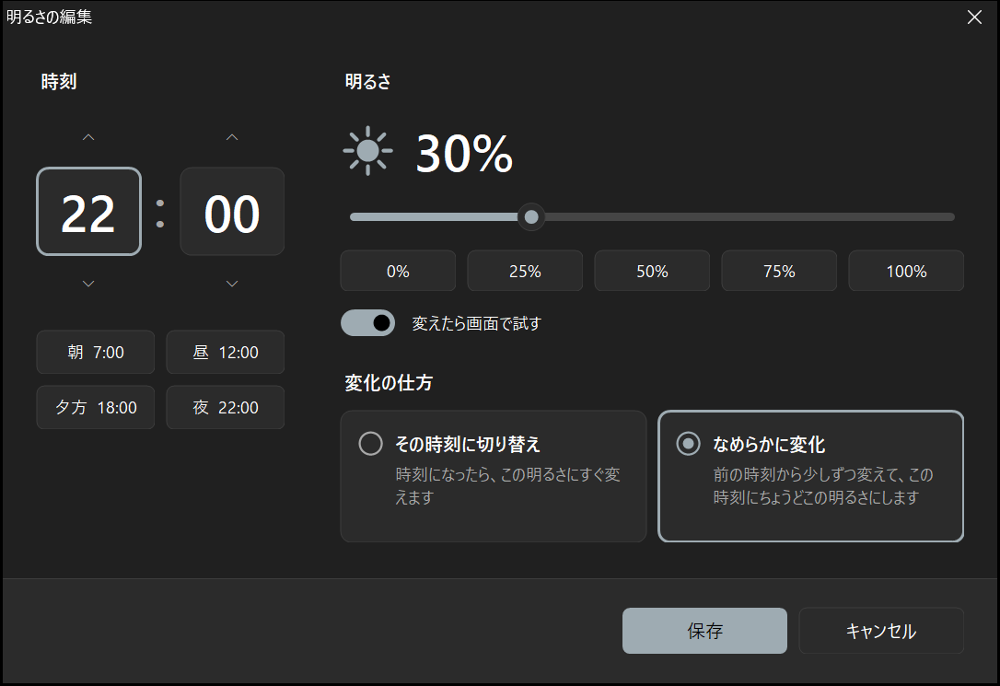
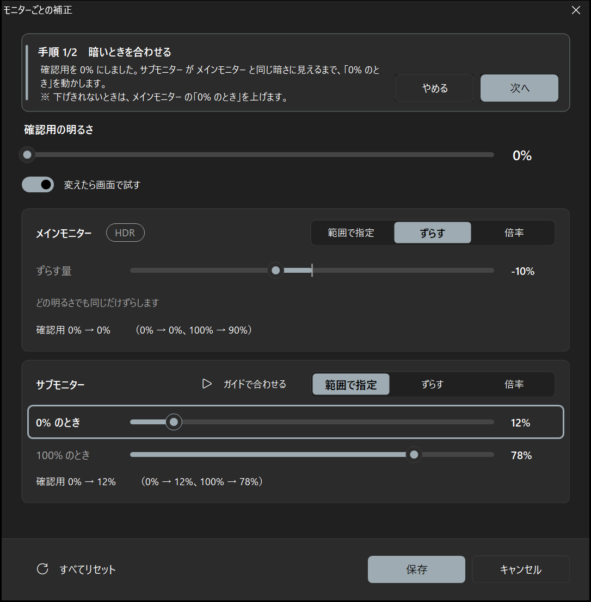

一日の流れに合わせて、明るさが変わる
時刻と明るさを登録しておくだけ。毎日その時刻になると、モニターの明るさが自動で変わります。
朝は、すっきり目が覚める明るさに
日中は、明るい部屋でも見やすく
夜は、少しずつ暗くして目にやさしく
特長
夜にまぶしい画面を、毎日手で暗くする必要はもうありません。
時刻を指定して自動で調整
「22:00 は 30%」のように、時刻と明るさを登録するだけ。毎日くり返し変わります。
なめらかに変化
時刻にパッと切り替えるほか、前の時刻からゆっくり変えていくこともできます。
24 時間のグラフ
一日の明るさの変化を、グラフでひと目で確認できます。
外付けモニターに対応
DDC/CI 対応の外付けモニターと、ノート PC の内蔵画面の明るさを変えられます。
HDR モニターにも
HDR がオンのモニターは、Windows の「SDR コンテンツの明るさ」を変えて調整します。
2 台の明るさをそろえる
同じ明るさでも見え方が違うモニターを、モニターごとの補正でそろえられます。
こだわりのポイント
毎日使うものだから、目にも気持ちにもやさしく。
夜に向けて、ゆっくり暗く
「なめらかに変化」を選ぶと、前の時刻から少しずつ明るさを変えて、登録した時刻にちょうどその明るさになります。
変わり始めと終わりはゆっくり、途中は少し速く。気づかないうちに、自然と目にやさしい明るさになっていきます。
明るさを決めるときは、スライダーを動かすとその場で画面の明るさが変わるので、実際に見ながら選べます。

2 台のモニターの明るさをそろえる
同じ 50% でも、モニターによって見え方はずいぶん違います。「モニターごとの補正」で、それぞれのモニターに実際に設定する値を調整できます。
- 範囲で指定：0% のとき・100% のときの値を決める
- ずらす：どの明るさでも同じだけ足す・引く
- 倍率：明るいときほど大きく変える
「ガイドで合わせる」を押せば、暗いとき・明るいときの順に、画面を見比べながら手順どおりに合わせられます。

使い方は 3 ステップ
難しい設定はありません。
-
ダウンロードして起動
ZIP を右クリック →「すべて展開」し、
BrightnessScheduler.exeをダブルクリックします。 -
時刻と明るさを登録
「追加」を押して、時刻と明るさ（0〜100%）、変化の仕方を選びます。
-
あとは放っておくだけ
時刻になると、明るさが自動で変わります。「Windows の起動時に開始」をオンにすれば、PC を起動するたびに自動で動きます。
よくある質問
「Windows によって PC が保護されました」と表示されます
個人が作った、まだ利用者の少ないアプリに表示される確認画面です。ウイルスが見つかったという意味ではありません。「詳細情報」を押してから「実行」を押すと起動できます。ソースコードは GitHub で公開しています。
モニターの明るさが変わりません
外付けモニターの明るさは、DDC/CI という仕組みで変えています。モニター本体のボタンで開く設定メニューで、DDC/CI がオンになっているか確認してください。設定画面の下に「対象: 〜」と表示されているモニターが、明るさを変えられるモニターです。
HDR をオンにしているモニターはどうなりますか？
HDR がオンのあいだは、多くのモニターで本体の明るさを変えても表示に反映されません。そのため、Windows の「設定 → システム → ディスプレイ → HDR → SDR コンテンツの明るさ」を変えて調整します。変わるのはデスクトップやふつうのアプリの明るさで、HDR の動画やゲームの明るさは変わりません。Windows の設定を変えられたくない場合は、設定画面の「HDR のモニターも変える」をオフにしてください。
ノート PC でも使えますか？
はい。ノート PC の内蔵画面の明るさも変えられます。
モニターのボタンで明るさを変えたら、どうなりますか？
次に明るさが変わる時刻までは、手で変えた明るさのままです。すぐスケジュールの明るさに戻したいときは、「今すぐ適用」を押してください。しばらく自分で決めた明るさにしたいときは、「明るさの自動変更」をオフにします。
PC を起動しても、自動で立ち上がりません
Windows の設定で自動起動がオフになっていることがあります。その場合はアプリの設定画面に「Windows の設定で自動起動がオフになっています」と表示されるので、「Windows の起動時に開始」のスイッチをオンにしてください。
起動しているのに、アイコンが見当たりません
Windows 11 では、新しいアプリのアイコンは最初、タスクバー右側の「^」の中に隠れています。タスクバーを右クリック →「タスクバーの設定」→「その他のシステム トレイ アイコン」で「輝度スケジューラ」をオンにすると、常に表示されます。
料金はかかりますか？
無料です。広告もありません。MIT ライセンスで公開しているオープンソースのソフトです。インターネットへの通信も行いません。
対応している Windows は？
Windows 10 と Windows 11 です。動作に必要な .NET Framework 4.x は Windows に標準で入っているため、追加のインストールは不要です。
やめるとき（アンインストール）は？
設定画面で「Windows の起動時に開始」をオフにしてアプリを終了し、フォルダーを削除するだけです。設定も消す場合は %APPDATA%\BrightnessScheduler を削除してください。モニターの明るさと、HDR のモニターの「SDR コンテンツの明るさ」は、最後に設定した値のまま残ります。